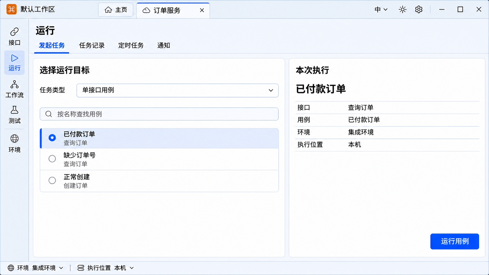

<!doctype html>
<html lang="zh-CN">
<meta charset="utf-8">
<meta name="viewport" content="width=device-width, initial-scale=1">
<title>运行 · 视觉定稿对照</title>
<style>
  * { box-sizing: border-box }
  body { margin: 0; background: #eef2f7; color: #172538; font: 15px/1.5 "Segoe UI", "Microsoft YaHei", sans-serif }
  header { display: flex; align-items: center; gap: 12px; flex-wrap: wrap; padding: 10px 18px; background: white; border-bottom: 1px solid #cdd7e3 }
  h1 { margin: 0 12px 0 0; font-size: 18px }
  label { display: inline-flex; align-items: center; gap: 6px }
  select, button { min-height: 34px; padding: 3px 10px; font: inherit; color: inherit; background: white; border: 1px solid #aebaca; border-radius: 5px }
  button { cursor: pointer }
  :focus-visible { outline: 2px solid #225eda; outline-offset: 2px }
  figure { display: grid; justify-items: center; margin: 12px 14px }
  figure img { display: block; width: 100%; height: min(75vw, calc(100vh - 138px)); min-height: 180px; object-fit: contain; object-position: top center }
  figcaption { width: 100%; padding-top: 8px; text-align: center; color: #3a4c64 }
  a { color: #2159b6 }
</style>
<header>
  <h1>运行 · 视觉定稿对照</h1>
  <label>场景 <select id="group"></select></label>
  <label>画面 <select id="variant"></select></label>
  <button id="next" type="button">切换对照图</button>
  <a id="original" href="01-online.png">查看原尺寸</a>
</header>
<figure>
  
  <figcaption id="caption" aria-live="polite"></figcaption>
</figure>
<script>
  const scenes = [
    ['同一用例 · 发起任务', [
      ['01 在线', '01-online.png', '已选择「查询订单」的「已付款订单」，集成环境，本机执行。'],
      ['02 本地', '02-local.png', '同一选择。对照两栏起止位置、页签、按钮与底栏。'],
      ['08 在线 · 尚未选择', '08-empty.png', '已有候选，等待选择；右侧保留预览位置，运行按钮禁用。']]],
    ['本地模块用例', [
      ['03 定稿', '03-module.png', '当前模块及子文件夹。查看适用用例和跳过原因。'],
      ['原归档样板', '../local-run-launch-proposal.png', '原先用于交接的本地发起页。'],
      ['上次实拍', '../acceptance/local-launch-preview.png', '原验收使用了不同数量的接口和用例；可比较卡片高度与页面留白。']]],
    ['任务记录', [
      ['04 在线', '04-records.png', '所选代理任务已结束，断言失败，报告已归档。'],
      ['07 本地', '07-local-records.png', '同类断言失败。右侧展示本次执行事实。'],
      ['原归档样板', '../run-records.png', '原归档图。定稿用中性状态表示已结束。']]],
    ['定时任务', [
      ['05 定稿', '05-schedule.png', '计划使用自身保存的环境和代理，底栏显示下次手动运行的选择。'],
      ['在线讨论原图', 'discussion/online-schedules.png', '此前在线讨论中的定时任务。']]],
    ['通知', [
      ['06 定稿', '06-notice.png', '查看计划、查看本次运行和标为已读分别操作。'],
      ['在线讨论原图', 'discussion/online-notifications.png', '此前在线讨论中的通知。']]],
    ['在线发起 · 原稿与实拍', [
      ['在线讨论原图', 'discussion/online-launch.png', '原讨论稿选择了测试套件。'],
      ['上次实拍', '../acceptance/online-agent-launch.png', '原真机实拍选择了代理工作流。可直接比较页标题、外边距、两栏下沿。'],
      ['01 定稿', '01-online.png', '定稿选择了单接口用例。']]]
  ];
  const group = document.querySelector('#group');
  const variant = document.querySelector('#variant');
  const picture = document.querySelector('#picture');
  const original = document.querySelector('#original');
  const caption = document.querySelector('#caption');
  function showPicture() {
    const [title, file, note] = scenes[group.selectedIndex][1][variant.selectedIndex];
    picture.src = file;
    picture.alt = group.value + ' · ' + title;
    original.href = file;
    caption.textContent = note;
  }
  function showScene() {
    variant.replaceChildren(...scenes[group.selectedIndex][1].map(([name]) => new Option(name)));
    showPicture();
  }
  group.replaceChildren(...scenes.map(([name]) => new Option(name)));
  group.addEventListener('change', showScene);
  variant.addEventListener('change', showPicture);
  document.querySelector('#next').addEventListener('click', () => {
    variant.selectedIndex = (variant.selectedIndex + 1) % variant.length;
    showPicture();
  });
  showScene();
</script>
</html>
